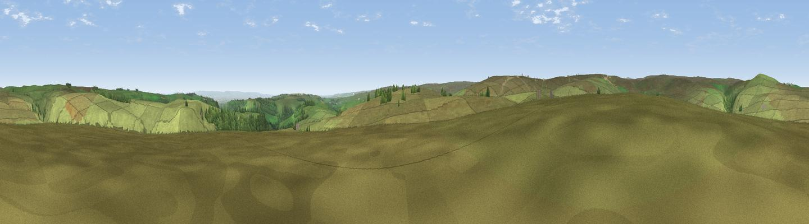

Munn End
#18527 in England · top 48% of its area beats it · near MarskeWhere it is
The exact computed spot (NZ 07820 02083). Click the marker for map links.
The view, rendered

A 360° render of this exact spot computed from the terrain model, tree cover and land cover — summer colours, afternoon light, calibrated against photographs of famous viewpoints. Real trees, hedges and buildings will differ in detail.
The panorama
Grey silhouette: terrain skyline in each direction (720 bearings, Earth curvature and refraction included). Dashed green: skyline with trees (+15 m) and buildings (+8 m) as obstacles. Blue strip: how far the ground is visible on each bearing.
Where the view opens
Wedge length = distance to the farthest visible ground on that bearing (vegetation-aware). Rings at 10, 25 and 50 km.
What fills the view
92% grassland · 7% woodland · 1% cropland
Angular shares of the visible panorama (visual magnitude), not map area. Landscape diversity 0.14 (0–1 Shannon).
Key numbers
More beautiful places nearby
The staircase of upgrades: each row has a higher view potential than everything closer. Driving times are estimates from straight-line distance, calibrated against real road routing — check an actual route before setting out.
| Place | Direction | Drive | Score |
|---|---|---|---|
| Holgate How | NNW · 3 km | ~7 min | 70.4 |
| Viewpoint near Barningham | NW · 7 km | ~15 min | 74.1 |
| Viewpoint near West Witton | S · 16 km | ~28 min | 75.6 |
| Viewpoint near East Witton | SSE · 18 km | ~31 min | 77.8 |
| Viewpoint near Ingleby Cross | E · 38 km | ~57 min | 78.8 |
| Beacon Hill | E · 38 km | ~57 min | 84.7 |
| Carlton Bank | E · 44 km | ~64 min | 85.1 |
| Roseberry Topping | ENE · 51 km | ~72 min | 85.8 |
54.41413, -1.88101 · source: osm peak · position refined by local search. Computed location — check access rights before visiting.